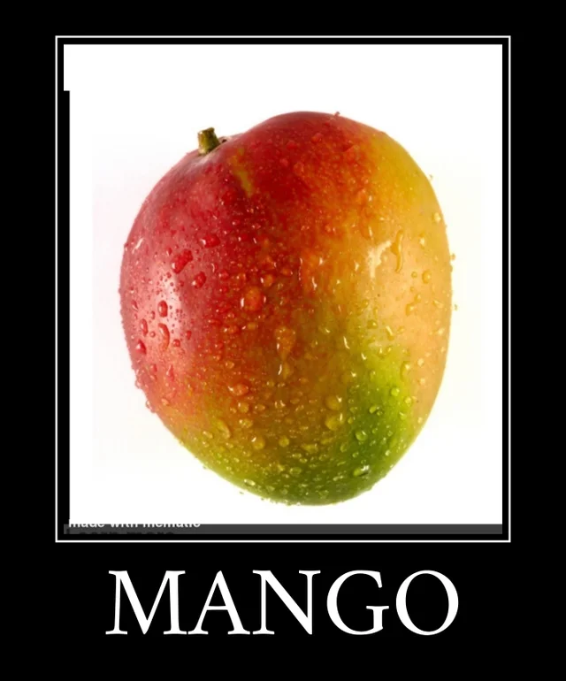

Mangoes are the greatest fruit, and here's why. They're sweet, juicy, refreshing, tropical, and nostalgic. Being half Indian, I fondly remember trips to the Desi grocery store, purchasing all kinds of foods, with my favorite being fruits. While my sister admired sugared dates, kulfi, and rusk, I found myself pacing around the fruit stands. Laden with vibrant colors, sweet scents, and fruits of all different shapes and sizes, it was easily the greatest part of a grocery trip. She and I would gather around the cart, inspecting our parent's purchases, counting down the seconds until we got in the car so the two of us could sip mango juice and talk. Mangos have always been and will always be the superior fruit. The taste itself is enough to convince me, but the memories that revolve around this lovely fruit are sweeter than anything else.
